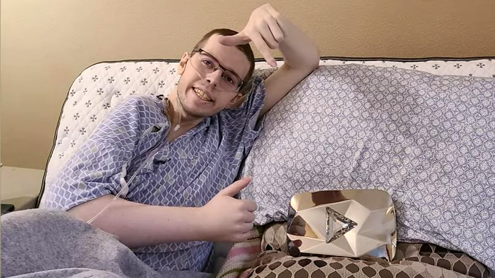

O Legado de Technoblade
Em agosto de 2021, Technoblade compartilhou com seus fãs que havia sido diagnosticado com câncer. O anúncio veio por meio de um vídeo chamado "where I’ve been", em que ele explicou, com seu típico humor e honestidade, que estava enfrentando dores no braço, o que levou ao diagnóstico após exames médicos.
Mesmo durante o tratamento, Technoblade continuou a gravar vídeos sempre que possível, demonstrando enorme força e determinação. Seu conteúdo manteve o tom leve e divertido, trazendo alegria aos fãs mesmo em meio às dificuldades pessoais.
Durante sua luta contra o câncer, Technoblade não apenas compartilhou sua jornada com sinceridade, mas também mobilizou sua comunidade para uma causa maior. Ao ser diagnosticado com sarcoma — um tipo raro de câncer — ele passou a incentivar seus fãs a apoiarem instituições dedicadas ao combate da doença.
Uma dessas instituições foi a Sarcoma Foundation of America (SFA), que se tornou amplamente conhecida no meio gamer após Technoblade mencionar seu nome. Por causa de sua influência e da força da sua comunidade, foram arrecadados centenas de milhares de dólares para pesquisas e suporte a pacientes com sarcoma.

Essa movimentação foi tão significativa que, após sua morte, a SFA criou uma página oficial de homenagem a Technoblade, reconhecendo publicamente o impacto que ele teve na luta contra o sarcoma e o quanto ele ajudou a dar visibilidade à doença, especialmente entre jovens.

O gesto mais inspirador não foi apenas a doação em si, mas o fato de que **Technoblade transformou sua dor em força coletiva**, fazendo com que sua história ajudasse outras pessoas a enfrentarem suas próprias batalhas. Essa conquista solidária se soma ao legado eterno que ele deixou.
Mesmo enfrentando o câncer, ele fez a diferença — como uma lenda dentro e fora do jogo.
Durante sua luta, ele não buscou piedade, mas sim compartilhou seu processo com sinceridade e até com piadas — como quando brincou sobre estar "usando câncer como desculpa para perder no PvP". Esse equilíbrio entre vulnerabilidade e humor o tornou ainda mais admirado.
Infelizmente, Technoblade faleceu em junho de 2022. Seu pai publicou um vídeo intitulado "So long nerds" (está disponível no site abaixo), que incluía uma última mensagem escrita por Alex poucas horas antes de sua morte. No vídeo, ele agradece aos fãs por tudo, dizendo:
"If I had a hundred more lives, I would choose to be Technoblade every time, because they were the best years of my life."
"Tradução: Se eu tivesse mais cem vidas, escolheria ser Technoblade todas as vezes, porque foram os melhores anos da minha vida."
Essa despedida emocionou milhões de pessoas ao redor do mundo. Sua coragem, sinceridade e a maneira como lidou com sua doença se tornaram uma inspiração não só para seus fãs, mas para todos que enfrentam lutas pessoais. Sua memória vive em cada vídeo, cada frase e em cada coração tocado por sua jornada.
Technoblade deixou um legado que vai muito além de suas conquistas no jogo. Ele provou que humor, habilidade e honestidade podem coexistir. Seu impacto foi tão grande que influenciou milhares de criadores de conteúdo e milhões de fãs ao redor do mundo.
Sua jornada foi marcada por conquistas, risos e um legado que vai muito além do Minecraft. Sua memória viverá em milhões de corações.
Mesmo após seu falecimento, sua comunidade continua ativa, celebrando sua vida, compartilhando memes, homenagens e mantendo sua mensagem viva: "Technoblade never dies."